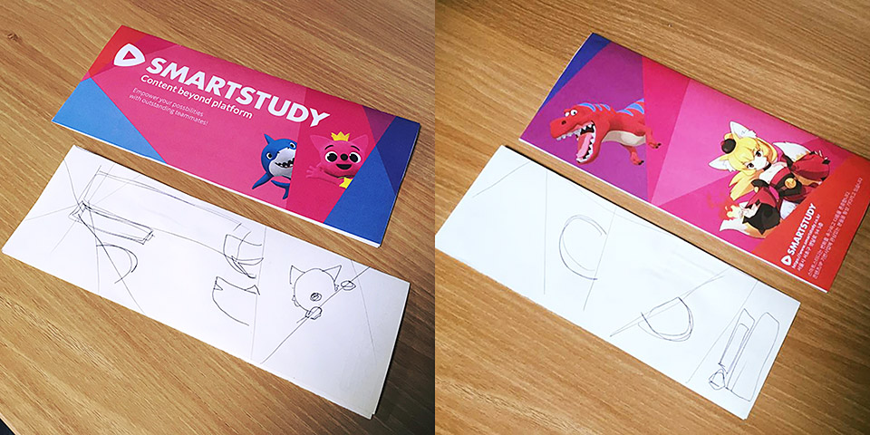

어제 어떤 분이 페이스북에서 구닥으로 찍은 사진을 ‘무보정 원본’ 이라는 글과 함께 올려놓은 것을 보았다. 구닥이 만든 결과물을 그 이후에 별도의 보정 없이 올렸으니까 그런 표현을 쓰셨다고 생각한다. 이미 구닥이 엄청난 보정을 한 사진인데, 그것을 ‘무보정’이라고 표현하는게 조금 이상하다고 생각했지만, 동시에 과연 어느 정도의 사진을 무보정이라고 할 수 …
read moreDeath Valley
어떤 종류의 일들은 왜 하는지, 또는 왜 그렇게 하는지 간단히 설명하기가 어려울 때가 있다. 내가 개인적으로 하는 일 중에도 그런 것들이 있고, 회사에서의 여러 일도 그러하고, 어떤 정치적인 선택도 그러한 경우가 많다.
궁극적으로 하고자 하는 일 또는 목표를 A 라고 할 때, A 를 바로 할 수 없으니 B 를 …
read moreA Postmortem of The Platance Hackathon
외부로 알려진 행사의 개요는 이렇다.
- ‘플레이탕스 해커톤’ 개최: http://www.bloter.net/archives/262994
시간이 지나, 돌이켜 봤을 때 성공한 많은 일들은 거창한 계획에서 시작하는 것이 아니라, 작은 아이디어나 작은 시도에서 시작한다고 생각한다. 그래서 작은 일들에 늘 관심을 가지고, 남들과 다른 생각이나 행동을 하는 사람들에게 큰 가치를 느끼고 무언가 같이 …
read moreSketch and Draft
소셜 미디어에 사진을 올리며 스케치와 시안 사이라고 적었다. 
모 대학교 취업 박람회에서 사용할 홍보물을 제작하기 위해 간단히 스케치한 것과 그 스케치를 바탕으로 만든 시안이었다.
디지털로 바로 작업하는 것보다 종이에 펜으로 일단 빠르게 그려보는 것이 아이디어 구체화가 더 빠르게 진행되고 시간을 절약할 수 있어 선호한다. 이는 프로그래밍에서도 바로 제품 코드를 작성하는 …
read moresegfault by ssl_session_cache in Nginx
과거에는 SSL 웹서비스를 위해서 도메인 별로 다른 IP를 써야만 했었다. 하지만 Server Name Indication이 등장한 이후로, 하나의 물리 IP에 여러 도메인의 SSL 웹 서비스가 가능해졌는데, 이를 위해 웹 서버 뿐 아니라 클라이언트에서의 지원도 필요하다. 대표적으로 Internet Explorer 6 등은 SNI를 지원하지 않는다.
회사에서도 SNI를 …
read more